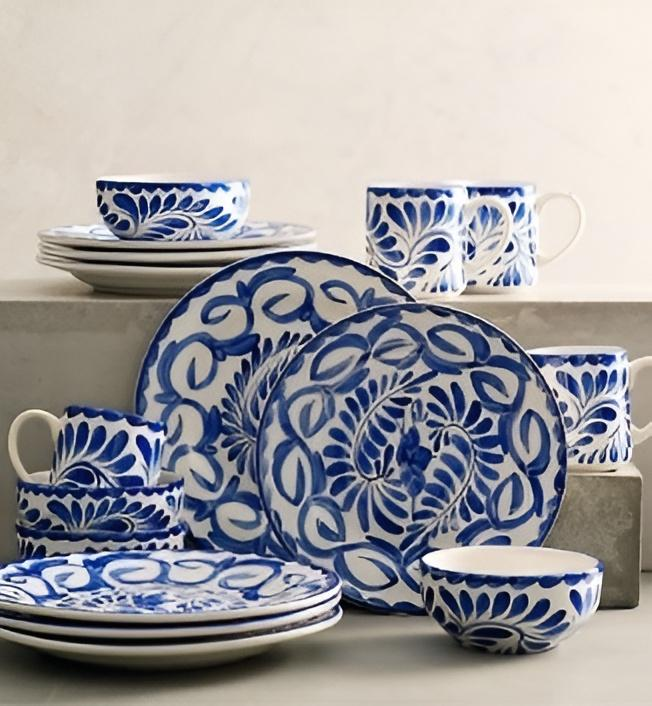

México
México es un país donde las tradiciones se entrelazan con la vida cotidiana. Todas las artesanías son un testimonio de esta riqueza cultural, cada pieza cuenta una historia única y sobre todo podrás admirar la habilidad de los artesanos al crear piezas únicas, hechas a mano. Desde los tradicionales sombreros de charro hasta los delicados bordados de blusas, estas artesanías son mucho más que objetos, son obras de arte que llevan consigo la esencia del pueblo mexicano, su calidez y amor por sus orígenes.
Artículos
Alebrijes
Los alebrijes tienen sus raíces en la imaginación del artesano Pedro Linares, quien en 1936 creó estas criaturas fantásticas mientras estaba enfermo. Inspirado por sus sueños, dio vida a estas figuras llenas de color y formas caprichosas. Desde entonces, los alebrijes se han convertido en símbolos del arte mexicano, representando la creatividad y el folclore del país.
Cada pieza tiene un diseño único, meticulosamente elaborado con madera de copal, cartonería, alambre, fibras naturales o textil. Decorados usualmente con símbolos Zapotecas que representan la bella cultura mexicana.
Nombre: Anaís Artesanal
Correo electrónico: anaisartesanal@gmail.com
Talavera Poblana
Originaria de Puebla, México, la Talavera fina es un tesoro cultural con más de cuatro siglos de historia. Cada pieza es un testimonio de la maestría artesanal transmitida de generación en generación. Caracterizada por sus colores vibrantes y patrones geométricos complejos, la Talavera fina es reconocida por su belleza y elegancia únicas. Cada pieza cuenta una historia de creatividad y artesanía meticulosa.
Perfectas para alegrar cualquier espacio, estas artesanías son ideales tanto para uso diario como para ocasiones especiales.
Nombre: Carlos Morales
Correo electrónico: carlos.morales.talavera@gamil.com
Arte Huichol
El arte Huichol, también conocido como Wixárika, es una expresión única y colorida de la cultura indígena mexicana, originaria de la Sierra Madre Occidental en los estados de Jalisco, Nayarit, Durango y Zacatecas. Una de las técnicas más distintivas del arte Huichol es el “nirikata”, que significa “hablar con dios” en lengua Huichol.
Consiste en cubrir con cera de abeja objetos como calabazas, cráneos o figuras de madera, para después aplicar diminutas cuentas de colores (chaquira) o estambre, formando complejos patrones geométricos y símbolos que representan elementos naturales, animales y divinos. El arte Huichol es mucho más que una expresión artística; es un vínculo con la espiritualidad, la naturaleza y la historia de una cultura indígena rica y vibrante de México.
Nombre: Elena Gómez
Correo electrónico: elena.gomez.arte_huichol@gmail.com